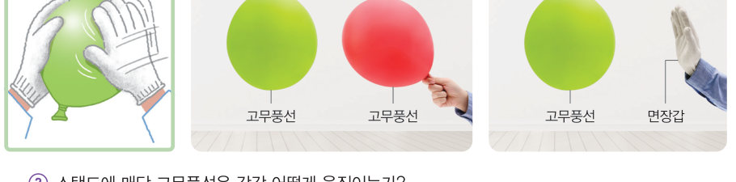
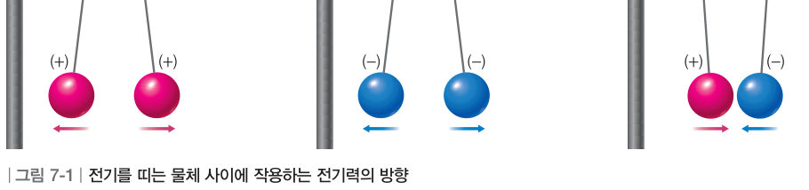

옷을 갈아입을 때 스웨터에 머리카락이 달라붙는 까닭은 무엇일까? 가상 풍선을 면장갑으로 문질러 서로 밀고 당기는 모습을 관찰하고, 원자 돋보기로 전자가 어떻게 이동하는지 확인해 보자.
🎯 이 단원을 배우면 — 마찰 전기 현상을 관찰하고, 이를 전기력과 원자 모형을 이용하여 설명할 수 있다.
첫 번째 블록공기 청정기의 필터에 미세 먼지가 달라붙는 까닭은 무엇일까? 229쪽
“공기 청정기는 주변의 미세 먼지를 걸러 주어 깨끗한 공기를 마실 수 있게 해 줘.” “공기 청정기를 열어 먼지가 달라붙어 있는 필터를 새 필터로 교체해 줬어.” 이 단원의 힌트 조각(마찰하면 생기는 전기 · 가까이 하면 생기는 전기)을 모으면 전기력과 정전기 유도 현상을 이해하여 첫 번째 블록 질문에 답할 수 있다.
이 단원과 관련해 이미 알고 있는 것에 표시해 보자.
해 보기 · 탐구 결과를 해석하여 결론 도출하기마찰 전기 현상 관찰하기 230쪽
겨울철에 옷을 갈아입으면 머리카락이 옷에 달라붙을 때가 있다. 이 현상은 옷과 머리카락이 마찰하면서 발생하는 전기 때문에 나타난다. 이처럼 종류가 다른 두 물체가 마찰하여 발생하는 전기를 마찰 전기라고 한다.

230쪽① 면장갑으로 두 고무풍선을 각각 문지른다. ② 한 고무풍선을 스탠드에 매단 다음 다른 고무풍선을 가까이 한다. ③ 면장갑을 매달린 고무풍선에 가까이 한다.
풍선을 문지르는 도구로 면장갑 외에도 헝겊이나 부직포 등을 이용할 수 있다.
가상 실험풍선과 면장갑
① 먼저 [문지르기]를 여러 번 눌러 두 풍선을 대전시킨 뒤 ② 풍선이나 ③ 면장갑을 매달린 풍선에 가까이 해 보자. [원자 돋보기]를 켜면 전하가 보여요.
문지르기 전에는 풍선도 면장갑도 전기를 띠지 않아요.
1스탠드에 매단 고무풍선은 각각 어떻게 움직이는가?
과정 2 — 문지른 다른 풍선을 가까이 할 때
과정 3 — 문지른 면장갑을 가까이 할 때
💬과정 2와 3에서 스탠드에 매달린 고무풍선에 작용하는 힘의 방향이 어떻게 다른지 이야기해 보자.
교과서전기력 231쪽
면장갑으로 문지른 두 고무풍선을 서로 가까이 하거나 면장갑으로 문지른 고무풍선에 면장갑을 가까이 하면 두 물체 사이에 힘이 작용한다. 이처럼 물체를 마찰하여 전기를 띠면 물체 사이에 힘이 작용하게 된다. 전기를 띠는 두 물체 사이에 작용하는 힘을 전기력이라고 한다. 전기력은 같은 종류의 전하 사이에는 서로 밀어 내는 방향으로 작용하고, 다른 종류의 전하 사이에는 서로 끌어당기는 방향으로 작용한다.

그림 7-1전기를 띠는 물체 사이에 작용하는 전기력의 방향
🧩 첫 번째 블록 조각
대전된 공기 청정기 필터와 미세 먼지 사이에 작용하는 힘은 (이)다.
교과서마찰한 물체는 어떻게 전기를 띠는 것일까? 231쪽
마찰한 물체가 전기를 띠는 것은 원자 모형을 이용하여 설명할 수 있다. 원자는 전기적으로 중성이므로, 원자로 이루어진 물체도 전기를 띠지 않는다. 그러나 두 물체를 서로 마찰하면 한 물체에서 다른 물체로 전자가 이동한다. 이때 전자를 잃은 물체는 (+)전하를 띠고, 전자를 얻은 물체는 (-)전하를 띤다. 이처럼 물체가 (+)전하나 (-)전하를 띠는 현상을 대전이라 하고, 대전된 물체를 대전체라고 한다.
그림 7-2물체가 대전되는 과정 — (가) 마찰하는 중 (나) 마찰 후
마찰 실험실무엇과 무엇을 문지를까?
두 물체를 고르고 [문지르기]를 눌러 보자. 물체마다 전자를 끌어당기는 정도가 달라서, 전자를 더 잘 끌어당기는 쪽이 전자를 얻어 (-)전하를 띠어요. (+) 털가죽 · 유리 · 면 · 고무 · 플라스틱 (-) 순서로 갈수록 전자를 잘 얻어요.
물체 ㉠
물체 ㉡
두 물체를 골라 보세요.
1털가죽으로 플라스틱 빨대를 문지르면 전자는 로 이동하여 빨대는 전하, 털가죽은 전하를 띤다.
2같은 물체 두 개(예: 고무풍선과 고무풍선)를 문지르면 .
스스로 확인하기230쪽 학습 목표를 달성했는지 확인해 보자 231쪽
1개념 확인 두 물체를 서로 마찰했을 때 전자를 잃은 물체는 전하를 띠고, 전자를 얻은 물체는 전하를 띤다.
2사고력 플라스틱 빗으로 머리를 빗으면 머리카락이 빗에 달라붙는다. 그 까닭을 마찰 전기와 관련지어 설명해 보자.
5분 테스트마찰하면 생기는 전기
1종류가 다른 두 물체가 마찰하여 발생하는 전기를 라고 하고, 전기를 띠는 두 물체 사이에 작용하는 힘을 이라고 한다.
3전기력은 같은 종류의 전하 사이에는 서로 , 다른 종류의 전하 사이에는 서로 방향으로 작용한다.
4전기를 띠는 물체 A, B, C를 실에 매달았다. A는 (+)전하를 띠고, A와 B는 서로 밀어 내며, B와 C는 서로 끌어당긴다. → B는 전하, C는 전하를 띤다.
6물체가 전기를 띠는 현상을 이라고 한다.
✔옳으면 O, 옳지 않으면 X
⑦ 서로 다른 두 물체를 마찰하면 (-)전하를 띤 전자가 이동한다.
⑧ 전자를 잃은 물체는 (-)전하를 띤다.
⑨ 전자를 얻은 물체는 (+)전하를 띤다.
⑩ 전자를 잃은 물체에는 (-)전하의 양이 (+)전하의 양보다 적다.
스스로 정리하기마찰 전기와 대전 234쪽
1전기력
⑴ : 전기를 띠는 두 물체 사이에 작용하는 힘 ⑵ 전기력의 방향: 같은 종류의 전하 사이에는 서로 방향, 다른 종류의 전하 사이에는 서로 방향으로 힘이 작용한다.
2대전
⑴ : 종류가 다른 두 물체가 마찰되어 발생하는 전기 ⑵ 대전: 물체가 (+)전하나 (-)전하를 띠는 현상 — 전자를 잃으면 전하를, 전자를 얻으면 전하를 띤다.
평가 기준
스스로 평가
지식·이해 마찰 전기 현상을 전기력과 원자 모형을 이용하여 설명할 수 있는가?
과정·기능 마찰 전기 현상을 관찰하고 결과를 해석할 수 있는가?
가치·태도 일상생활의 전기 현상에 호기심을 느꼈는가?
제출학생 정보 · 제출하기
모든 활동을 마친 뒤 제출하면 전체가 한 번에 채점되고 피드백이 나타나요. 답안은 선생님 스프레드시트(중2 탭)에 기록돼요.